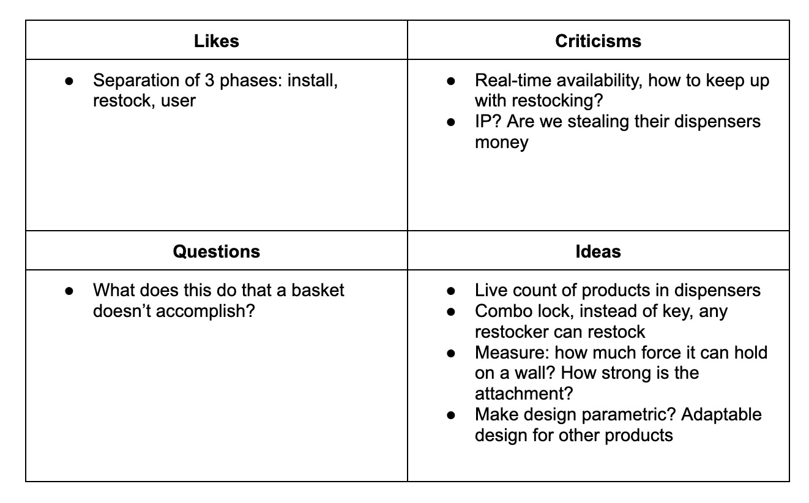
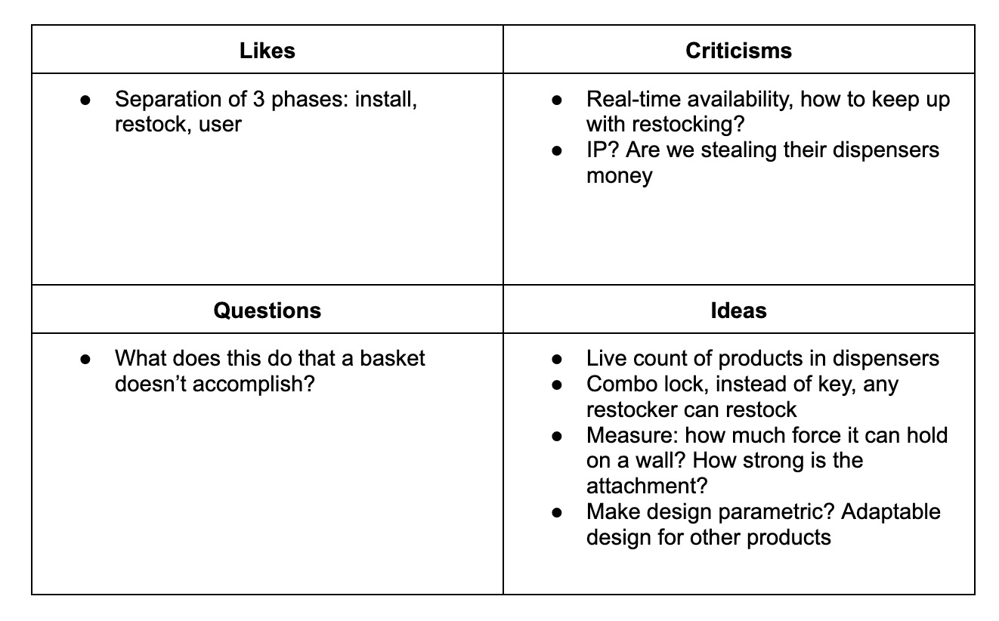
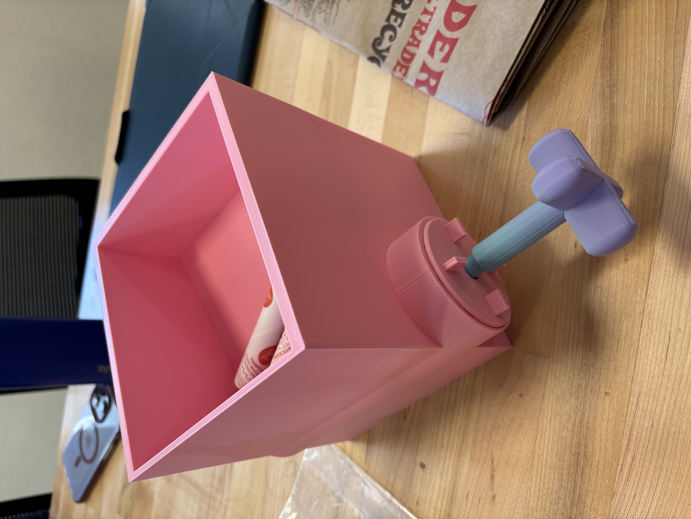
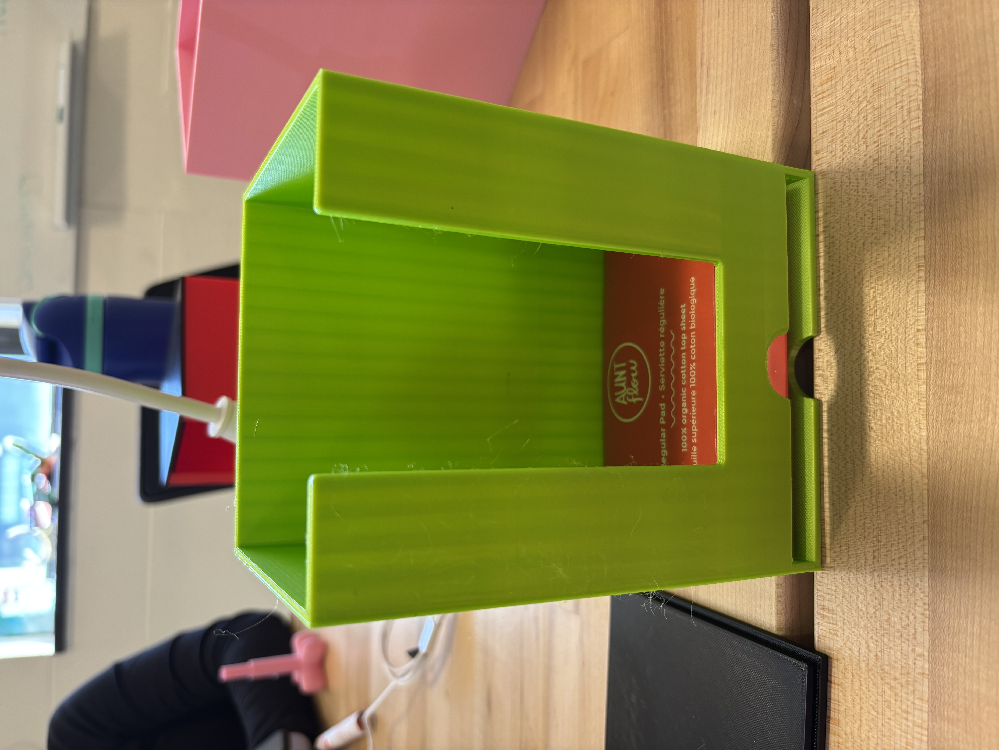
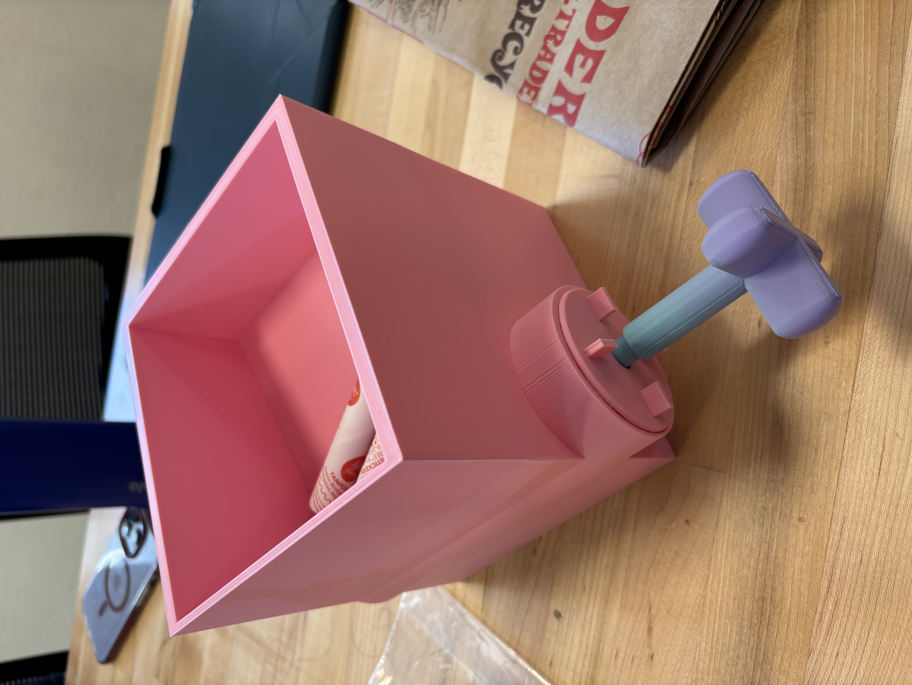
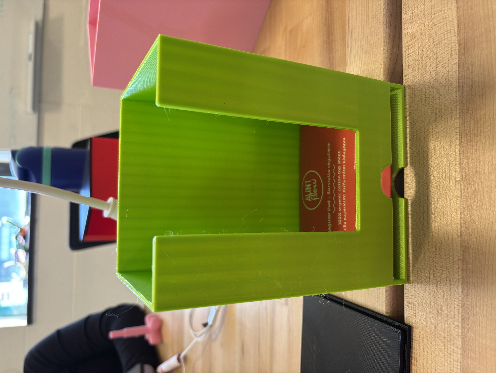
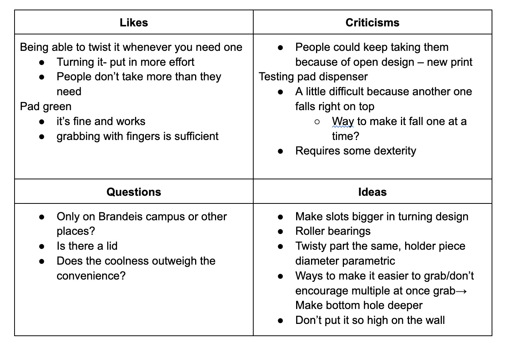
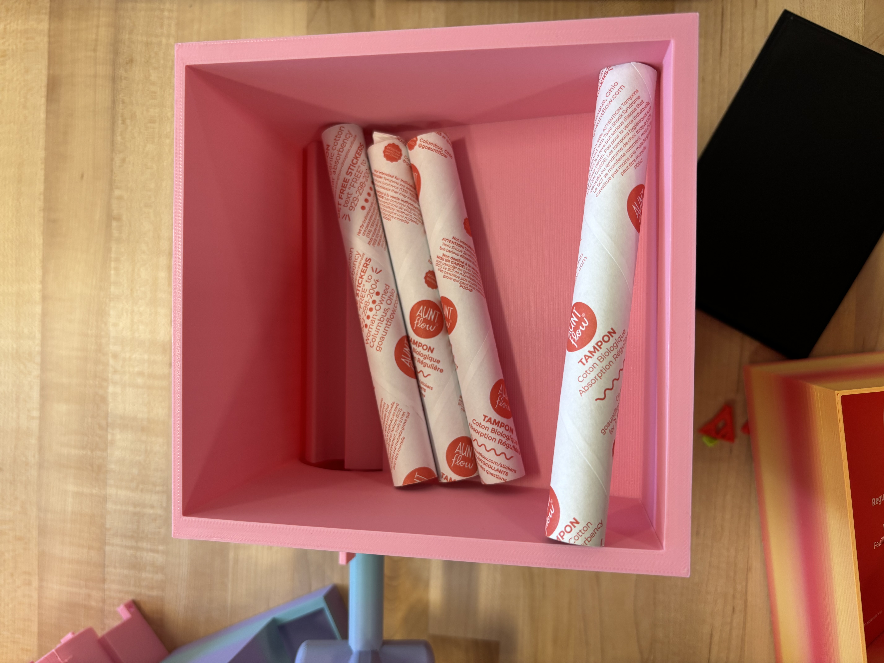
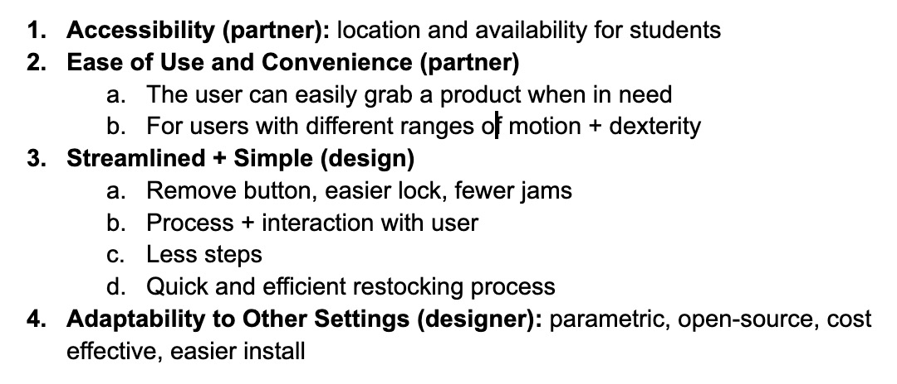
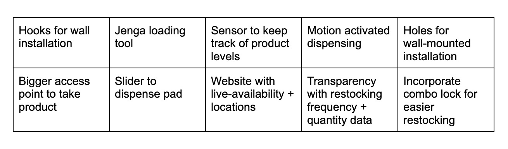

This week, our team worked on testing our initial prototypes with the class to gain insight into the most valuable features to include in our product and also discovering current painpoints to our existing solutions.
Design Review
Analyze
We presented our initial storyboard prototype with the class and several physical prototypes with other projected groups which offered many insights into sources of improvement for future prototypes as well as questions about our design and product.
 
We first gained feedback from our class on our storyboard.

We first gained feedback from our class on our storyboard.
Based on our storyboard presentation, the class liked how our user cycle included three main categories of users: installers, restockers, and users who all have different action steps in relation to the dispensers. One major question centered around simplifying the design: What can our design accomplish that a simple basket doesn’t? Some criticisms in our storyboard concerned having a system that could keep track of the live availability of products for each dispenser using some kind of sensor mechanism instead of simply just reporting when dispensers were empty using a QR code. Some other ideas that arose from the class discussed ways in which we can measure the limitations of our design such as measuring the amount of force that it can withstand or how long it takes to restock products. We also got some feedback suggesting ways to incorporate a more efficient locking system and making our design parametric so it is adaptable for different products or locations outside of campus.
We then moved on to testing our physical prototypes with other groups in class. We presented three main prototypes: one pad dispenser, one tampon dispenser with a sloped feature, and another tampon dispenser with a rotating wheel mechanism to dispense one tampon at a time.
 Prototype tampon dispenser

Prototype roller tampon dispenser

Prototype pad dispenser
Prototype tampon dispenser

Prototype roller tampon dispenser

Prototype pad dispenser
From this feedback session, users appreciated how our design would limit people to taking one product at a time–preventing people from taking a big bunch of products which could lead to stock-outs. Users also enjoyed the novelty of the spinning wheel in the tampon dispenser which made it a more enjoyable experience.
 Feedback grid from the group we interviewedHowever, there were also criticisms of these prototypes. With the spinning wheel prototype, the slots to hold the tampons were too tight-fitting, meaning the tampons wouldn’t leave the wheel attachment for people to actually access the product. There were accessibility issues in our other two prototypes, specifically in being able to take the product out of the dispenser. To remove a single tampon or pad, it required users to have a good amount of dexterity and the process could be more challenging for people with bigger fingers.
Difficulties with the tampon dispenser Diameter for the dispenser portion could be increased for future iterations so the tampons don't get stuckFrom these criticisms, we had many ways to improve our designs. One change could be making the design parametric so other brands of tampons and pads could fit in the dispenser, especially if these dispensers were installed in locations outside campus. Users also suggested modifying the opening of the dispenser to be in the back or the side instead of the top. In terms of accessibility, the finger cutouts could be larger and deeper. For actual functionality of the dispenser, the amount of tolerance in the fit of the lid and dispensing holes for tampons could also be increased as well as the ramp position and angle so tampons could be dispensed.
 Realizing that the tampons have slightly different lengths, a consideration to remember in our future prototypesPrioritize
From our analysis, we determined our top guiding principles, considering a balance between partner principles, design principles, and designer principles. Our partner principles address the explicit needs of our users, as revealed by the interviews and testing we conducted, such as accessibility, reliability, and ease of use. Our design principles consider the functionality of our dispensers and how well they accomplish the task of delivering products one-at-a-time. Finally, our designer principles represent the values our team feels are critical to the design, including the adaptability of our dispensers for a wide range of locations, users, and products. A summary of our top guiding principles is as listed below:
 Top guiding principlesRedefine + Ideate
After considering our newly defined priorities, we revised our “How Might We…?” statements to reflect the new information that we’ve gained:
 Original "How Might We?" statements
Original "How Might We?" statements
 Revised "How Might We" statements
Revised "How Might We" statements
Finally, we generated the following (realistic and ambitious) ideas for future prototypes to address our redefined “How Might We?” statements:
 Ideas for future iterations of our design